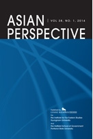

收录于合集

Sovereignty: Building Blockor Stumbling Block in Resolving Northeast Asian Security Disputes?
简 介
【作者简介】
J ohn Feffer，曾任World Policy Journal的副主编。现为美国政策研究所(Institute for Policy Studies) “Foreign Policy In Focus”项目负责人。
【文章来源】
Asian Perspective ，Volume 42, Issue 3，Jul-Sep 2018, p.463-476.
【期刊介绍】

**Asian perspective 创立于1999年，为每季度出版的学术期刊，自2011年开始，由Lynne Rienner
Publisher负责出版相关事宜，关注主题为东亚地区议题分析。
**
【期刊网址】
http://journals.rienner.com/loi/aspr
【整理】 高嘉琳
【审核】 李逸成 庞林立
【提纲】
摘要
主权及核问题
基于主权的解决模式
摘 要
**
**
特朗普的 “美国优先”在国际关系上强调国家主权，促使美国对朝政策的修正。中日两国日益高涨的民族主义亦再次激起历来对于地区领土主权及历史问题的争辩。此外，朝鲜拥核议题也亟待处理。就现状来看，朝鲜目前仍为“核武俱乐部”非官方成员之一，国际社会持续要求朝鲜限缩其核武发展的应对模式，应得以延续。唯美国对外政策指导思想的改变，或为现状带来不稳定性。战争虽然得以改变东北亚地区局势现况，然并不会为解决模式的首选，而潜在非军事解决方案有三：其一， 东北亚地区国家主权地位的正常化 ；其二， 主权间的协调 ，例如由中俄双方支持的“双暂停协议”；其三，东北亚地区国家借由在共同议题—气候变迁上的合作， 消弭多边合作的利益冲突，以重构主权意义并促进正向互动循环 。
作者首先提到在联合国的框架下，成员国需要转移部分主权，以参与联合国事务—签订国际人权公约作为法律框架；应允如“保护责任(Responsibility to Protect)”的原则以赋予外部干预正当性；参与联合国相关组织如国际刑事法院。然各国仍或多或少强调主权的重要性，各国领导人经常在演讲中提及主权概念，释放出期望他国能尊重国家领土的不可侵犯性。
接着，又论及2017年的联合国大会中，朝鲜外相李勇浩提出朝鲜作为一主权国家，有权拥有核武的声明。此声明并非完全处于预期，唯特朗普先前发表的演讲与过去一贯的态度有些许差异。特朗普于其演讲中使用较多针对性用语，切对于金正恩的态度相较负面；此演讲亦可看出其对于主权重要性的强调，特朗普在言论中提及主权概念不下20次。相较于其他G20国家发表的演讲，总共仅提及6次主权概念。此外，特朗普并未在其言论中提及多边合作相关的声明。
特朗普对于主权的论调可以由两层面切入。一方面，他 表明联合国为主权国家的集合体 ；另一方面，强调其行政团队正 重塑其外交政策中的主权概念与其 “美国优先”的思想相符。作者更进而提出特朗普建立国家的分类方式—美国尊重及不尊重的主权国家，且其随后更指名伊朗、叙利亚、委内瑞拉、朝鲜四个国家。更精确来说，特朗普将主权的诠释由以国家为基础，扩大到以民主为核心。提出，针对前述4个国家将不会尊重其国家主权，而重视4国人民对其国家发展的期望。
最后，本文作者以此为基，探讨特朗普及朝鲜领导阶级的观点作比较—提出双方在 国家领土不可侵犯 、 境内最高统治权 的相似性。然指出，虽双方观点之间具有相似性，对于东北亚地区安全的解决方案仍无法带来进展。更提出除了美朝两国， 东北亚地区主权国家的互动 及 历来当地主权相关争议 亦使地区安全问题复杂化。唯朝鲜问题因其国际地位，须与东北亚地区主权争议区隔—作为联合国承认之主权国家，然并为受到日本、南韩以及美国的正式承认。此外，东北亚地区尚缺乏 多边安全合作组织 ，以处理地区争端。并提出美国、中国、日本三国内部政治情势的改变对于地区安全议题进展可能造成影响。原先应当对合作关系具有促进性的主权，现在却成为其阻碍。
主权及核问题
此段大致可以分为五部分，分别为：
一、 核武禁扩条约 (The Nuclear Non-Proliferation Treaty) 的介绍 ：作者在此部分概要介绍核武禁扩条约的生效以及其内涵，表明其意义及目的。
二、 朝鲜与核武禁扩条约 ：作者在此部分提到朝鲜于1985年遵照核武禁扩条约，然在2003年结束执行，并探讨自此之后朝鲜对于拥核的态度及行为。并将朝鲜态度的转变与其邻国日本、南韩至今的态度转变作比较。首先由日本宪九条为引，针对日本近年态度转变的因素做探讨；接着探讨南韩面对情况对其整体政策的转变。
三、 整体景况 ：作者在此部分讨论其他国家拥核的状况，随后再次提及朝鲜对于拥核的野心，且朝鲜以国家主权为基础，提出其拥有核武的正当性以及合理性，同时亦指出国际社会对于平壤持有核武的否定态度及担忧，更进而做出分析。
四、 美国政府对朝鲜拥核的态度 ：作者在此部分分别提出奥巴马政府时期以及特朗普政府时期对于朝鲜核问题所采用的不同政策模式，并探讨两时期不同性质的外交政策对于平壤可能造成的影响。
五、 小结 ：作者在此部分探究朝鲜核问题对于仅有特定国家得以主权为基础拥核状况的可能带来的转变，并指出朝鲜以国家主权为声明基础和特朗普政府美国优先原则，以及与日本、中国政府态度的冲突将持续影响东北亚区域安全问题的解决进程。
基于主权的解决模式
作者指出东北亚地区安全虽得以就目前模式延续下去，然基于前段所提出探讨的各项因子，以当前架构维系地区安全局势将愈趋不稳定。战争虽然得以改变东北亚地区局势现况，然碍于美朝对于发动战争后可能造成后果的疑虑，双方并未将正面武装冲突视为首要解决方案，然而，战争仍有可能因为双方误判、误解而触发。
作者在此段提出解决东北亚地区当今局势的三种潜在非军事可能解决模式：
一、 东北亚地区国家主权地位正常化： 朝鲜国家主权正常化，带动日本、韩国外政策的改变。作者更进而探讨若采用此模式，美国角色对于改变进程的影响。
二、 主权间协调： 作者在此解决模式提及由中俄双方支持的“双冻结协议”，并简要叙述此协议内容，并探讨朝美双方对此协议的态度以及实践情形。
三、 借由共同处理气候变迁议题促进多边合作： 作者就此解决模式提及东北亚地区国家得借由处理共同面对的安全问题作为多边合作的开端。他指出截至今日，气候变迁的威胁促使所有国家签署巴黎气候条约，承诺减少各国的碳排放量。而东北亚地区碳足迹量之大，若以此议题作合作支持应当为适切的多边合作开端。
最后，作者分析当前东北亚地区政治环境中仍处于冷战时期状态，分别由以俄罗斯、中国、朝鲜为一方；美国、日本、南韩为另一方的模式互动，而此政治环境对于朝鲜乃至东北亚整体局势影响作分析。另提及欧洲脱离冷战状态的模式，与东北亚地区缺乏相同结构条件，而以主权为核心议题的状况比较，并作结。
点击左下角“ 阅读原文 ”获取原文pdf版
**
**
声明
此文为国政学人微信公众平台外文编译系列文章之一，由国政学人编辑首发，不代表本平台观点。欢迎转发分享，未经授权谢绝转载。如有问题，请联系guozhengxueren@163.com
更多阅读
国政学人 （ID：guozhengxueren)
为方便学人及时阅读高质量文章
别忘把国政学人设置 星标 哦~